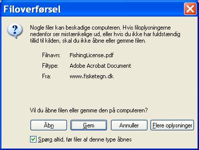

SPØRGSMÅL OM KØB AF FISKETEGN
HVILKET FISKETEGN - LYSTFISKER ELLER FRITIDSFISKER?
HVOR MÅ JEG FISKE MED FISKETEGNET?
HVAD KOSTER FISKETEGNENE?
HVAD GÅR PENGENE TIL - FISKEPLEJE?
KØB FISKETEGN
UDSKRIV KVITTERING/FISKETEGN
Ændring af kodeord
JEG VIL FORNY ELLER FORLÆNGE MIT FISKETEGN
ADRESSEÆNDRING
PERSONLIGE OPLYSNINGER
SIKKERHED VED BETALING
HVILKE BETALINGSKORT KAN JEG BRUGE?
HVILKET FISKETEGN - LYSTFISKER ELLER FRITIDSFISKER?
Der er 2 typer fisketegn - Lystfiskertegn og Fritidsfiskertegn
Lystfisker
Hvis du fisker med lette håndredskaber, skal du have lystfiskertegn. Håndredskaber er
fx fiskestang, pilk og harpun - redskaber som du fisker aktivt med.
Hvem skal
ikke have lystfiskertegn?
- Personer under 18 år
- Personer der har opnået ret til folkepension
- Fritidsfiskere som har et gyldigt fritidsfiskertegn
- Ejeren og resten af husstanden af den grund, der ligger nærmest ved det ferskvand, der bliver fisket i.
- Lystfiskere der fisker i "put and take" søer (ørredssøer).
Fisketegnet er personligt og må ikke bruges af andre - heller ikke af personer i familien
eller personer som har den samme adresse.
Fritidsfisker
Hvis du fisker med redskaber som fx garn, ruser og kroge, skal du have
fritidsfiskertegn. Redskaberne fisker passivt, uden at du behøver at være til stede.
For at være fritidsfisker skal du:
- Være fyldt 12 år (der er ingen øvre aldersgrænse)
- Have fast bopæl i Danmark, medmindre du kommer fra et EU-land, Island eller Norge og har en
nærmere tilknytning til Danmark, for eksempel på grund af arbejde her i landet.
Du skal have fritidsfiskertegn, selvom du har opnået ret til folkepension.
Fisketegnet er personligt og må ikke bruges af andre - heller ikke af personer i familien
eller personer som har samme adresse.
Mere information
HVOR MÅ JEG FISKE MED FISKETEGNET?
- I saltvand på dansk fiskeriterritorium
- Naturlige ferske vande - med ejerens tilladelse. Hvis du fisker med redskaber, skal redskaberne mærkes
med navn, adresse og matrikelnummer for den ejendom som har fiskeretten.
- Kanaler, grøfter og lignende, som er skabt af mennesker, men som er en del af naturlige vandløb.
Vær opmærksom på, at der er mange steder, hvor du ikke må fiske. Det kan være på grund af fredningsbælter, regler om
afstand eller der er en lokal lyst- eller sportsfiskerforening/klub som har fiskeretten. Og der er områder, hvor
fiskeri
helt er forbudt.
Mere information:
HVAD KOSTER FISKETEGNENE?
Lystfiskertegn til fiskeri med lette håndredskaber som fx stang:
- 1 år - 185 kr. Gælder 1 år fra og med betalingsdagen
- 1 uge - 130 kr. Skriv hvilken periode på kortet
- 1 dag - 40 kr. Skriv hvilken dag på kortet
Du kan for dag- og ugekort vælge en anden gyldighedsdag- eller periode end den dag hvor du
betaler. Denne dag, eller for ugekort periodestart, kan maksimalt være 30 dage efter betalingsdagen.
Du skal skrive den valgte dag eller periode på tegnet, inden du starter fiskeriet.
Årskort gælder fra betalingsdagen, eller 1 år i forlængelse af lystfisketegnets nuværende gyldighedsperiode.
Fritidsfiskertegn til fiskeri med redskaber som fx garn, ruser og kroge koster 300 kr. for 1 år fra
betalingsdagen,
eller 1 år i forlængelse af fritidsfiskertegnets nuværende gyldighedsperiode. Du kan også bruge fritidsfiskertegnet
som lystfiskertegn.
HVAD GÅR PENGENE TIL - FISKEPLEJE?
Indtægterne fra salg af fisketegn går til fiskepleje gennem udsætninger, restaurering og
lignende af vandløb og søer samt foranstaltninger og forskning, der i øvrigt har betydning for
reproduktion, vækst m.v. af fiskebestandene. Midlerne er på den måde til gavn for fiskene,
og det giver bedre muligheder for et godt fiskeri for lystfiskere, fritidsfiskere,
bierhvervsfiskere og erhvervsfiskere.
Indtægterne er på ca. 30 millioner kr. om året. De bliver administreret af Ministeriet for Fødevarer, Landbrug og
Fiskeri, Fiskeristyrelsen, i tæt samarbejde med Danmarks Fiskeriundersøgelser og fiskeriets organisationer.
Mere information:
HVOR KAN JEG KØBE FISKETEGN?
Fisketegn.dk
Det nemmeste og billigste er at købe dit fisketegn her på
www.fisketegn.dk
Posthuset
Du kan købe fisketegn på ca. 250 posthuse og i ca. 600 postbutikker i Danmark. Et giroindbetalingskort koster 15
kroner ved indbetaling på posthuset.
Udsalgssteder
Der er ca. 200 udsalgssteder, hvor du kan købe fisketegn. Det er fx turistkontorer, campingpladser,
fiskesportsbutikker og
lignende. Nogle af udsalgsstederne kræver et gebyr oveni prisen.
Mere information:
KØB FISKETEGN
TRIN 1 Vælg:
- Lystfiskertegn eller Fritidsfiskertegn
Du kan kun købe én slags fisketegn ad gangen (lyst- eller fritidsfiskertegn). Hvis du vil købe flere typer tegn,
skal du først afslutte det køb, du er i gang med, og derefter gå tilbage i startbilledet.
TRIN 2 Vælg for lystfiskertegn mellem:
TRIN 3Vælg om du vil have plastikkort (frivilligt).
Plastikkortet har samme størrelse og kvalitet som et kreditkort. Det er let at have med, og
så er du sikker på, at du kan huske dit fiskerinummer. Kortet koster 15 kr., og det bliver sendt
til dig indenfor ca. 14 dage efter købet.
Der står ikke gyldighedsperiode på plastikkort. Det er gyldigt så længe som det pågældende
fiskerinummer forlænges. Startdatoen på plastickortet er den dato som plastikkortet er købt (de 15 kr. er betalt).
Du beholder dit fiskerinummer og behøver altså ikke at købe nyt plastikkort ved fornyelser.
TRIN 4 Læg det valgte i indkøbskurven.
Nu kan du købe flere fisketegn, fx til familie og venner, inden du går til betalingsbilledet.
Husk at hvert medlem af en husstand skal have sit eget fisketegn.
TRIN 5 Kontroller dit køb - er de indtastede oplysninger rigtige?
TRIN 6 Bekræft købet ved at indtaste oplysninger fra dit betalingskort:
- Kortnummer - findes på kortets forside
- Udløbsdato - findes på kortets forside
- Kontrolnummer - 3 sidste cifre i talrække på bagsiden over magnetstriben eller i underskriftsfeltet
TRIN 7 Udskriv fisketegn:
Når betalingen er gennemført, kan du udskrive det/de købte fisketegn. Fisketegnet
indeholder det fiskerinummer, som du sammen med legitimation skal have med, når
du tager ud at fiske. Hvis du bliver kontrolleret skal du oplyse nummeret og
vise ID.
Fisketegnet kan udskrives i PDF-format*, eller i et simpelt tekst-format,
som kan udskrives på alle typer printere. Hvis der ikke er tilsluttet printer til din computer,
kan du nøjes med at notere fiskerinummeret.
Vælg udskriftsformat og tryk på "Udskriv". Så kommer der en
filoverførselsmeddelelse på skærmen:

Du vælger "Åbn", hvorefter fisketegnet kommer på skærmen, og kan udskrives. Hvis du
vælger "Gem" kan du udskrive fisketegnet på et senere tidspunkt.
* Du kan hente PDF-filen ved hjælp af læseprogrammet Acrobat. Programmet er gratis, og du kan få det her:
http://www.adobe.com/prodindex/acrobat/readstep.html.
Mere information:
UDSKRIV KVITTERING / FISKETEGN
Oplysningerne fra dit betalingskort bliver kontrolleret. Derefter sender
dibs
en kvittering for det gennemførte køb, til den mail adresse som eventuelt er angivet sammen med de øvrige
brugeroplysninger.
Det sker straks efter købet. Hvis der ikke er angivet nogen mail adresse, fremsendes denne kvittering ikke.
Hvis der er fejl, og købet derfor ikke kan gennemføres, vil du straks få besked om fejlen. Du vil også blive vejledt
om,
hvordan du kan rette fejlen.
På fisketegnet står det fiskerinummer, som du skal have med, når du fisker, sammen med legitimation.
Når du har nummeret, kan du tage på fisketur.
Hvis du har valgt at bestille et fisketegn af plastik, bliver det sendt til den adresse, du har oplyst, indenfor ca.
14 dage.
Det er helt frivilligt, om du vil købe et plastikkort. Hvis du bliver kontrolleret, skal du blot oplyse dit
fiskerinummer
og vise legitimation. Hvis du har oplyst dit CPR-nummer, da du købte tegnet, kan du oplyse dette i stedet for
fiskerinummeret.
Det er en god idé at få et plastikkort. Det er nemt og praktisk at have med - og så er du sikker på at kunne huske dit
fiskerinummer.
Beløbet bliver normalt trukket på din konto på arbejdsdagen, efter at du har betalt.
ÆNDRING AF KODEORD
Når man har købt et års-fisketegn kan man efterfølgende benytte fisketegnsnummeret
som bruger ID og postnummeret som kodeord, hvis man vil logge på fisketegnssiden.
Første gang man logger på med postnummeret som kodeord, vil man blive bedt om at
ændre kodeordet.
Man ændrer kodeordet ved at vælge "skift kodeord" på den blå menu-linie.
Først skriver man postnummeret og derefter skriver man det nye valgfri kodeord to gange.
Kodeordet er ændret, når der er trykket på opdater.
Hvis man ændrer adresse og dermed skifter postnummer, vil kodeordet/det gamle postnummer ikke
automatisk blive ændret til det nye postnummer, hvis man på et tidligere tidspunkt selv har valgt
at ændre til et valgfrit kodeord.
JEG VIL FORNY ELLER FORLÆNGE MIT FISKETEGN
Hvis dit fisketegn er udløbet, kan du beholde dit fiskerinummer ved at forny lystfiskertegnet eller
fritidsfiskertegnet. Du kan også forlænge det, inden det udløber.
TRIN 1 Klik på "login" i menulinjen
TRIN 2 Indtast dit fiskerinummer
TRIN 3 Indtast kodeordet = dit postnummer eller det kodeord, som postnummeret er ændret til.
TRIN 4 Du får vist en status for dine oplysninger (adresse, sidste betaling, mv.)
Du kan nu forlænge dit fisketegn. Hvis det ikke er udløbet, og det er et årskort, kan du forlænge
det direkte efter udløbsdatoen. Du kan for dag- og ugetegn også vælge en anden dato, som ikke er senere end
30 dage efter den dag, hvor du køber dit fisketegn.
Du kan forny dit fisketegn, selv om det er udløbet. Det kan du gøre i op til 5 år efter det
er udløbet. Hvis du fornyr tegnet, behøver du ikke at skifte fiskerinummer.
ADRESSEÆNDRING
TRIN 1 Klik på "login" i menulinjen
TRIN 2 Indtast dit fiskerinummer
TRIN 3 Indtast kodeord = dit postnummer eller det kodeord som postnummeret er ændret til.
TRIN 4 Du får vist en status for dine oplysninger. Vælg "ret oplysninger" og du kan rette adressen.
Du kan også indtaste dit CPR-nummer. Så bliver dine adresseoplysninger opdateret automatisk, så de svarer til
oplysningerne i Folkeregistret.
PERSONLIGE OPLYSNINGER
Når du køber fisketegn på fisketegn.dk, registrerer vi disse oplysninger:
- Fornavn og efternavn
- Adresseoplysninger
- E-mailadresse
- CPR-nummer - hvis du har oplyst det
Fiskeristyrelsens database er en sikret database. Indholdet af databasen er kun tilgængelig for
Fiskeristyrelsen. Dine personlige oplysninger eller dele af dem vil under ingen omstændigheder blive givet videre til
andre.
Vi kan også garantere, at dine oplysninger ikke vil blive brugt i andre forbindelser end dit køb af fisketegn. Og din
e-mail adresse
vil ikke blive brugt af andre til at sende mails til dig.
Du kan opdatere dine personlige oplysninger ved at klikke på "login" i menulinjen, indtaste dit fiskerinummer og
indtaste dit kodeord,
som er dit postnummer eller det kodeord som postnummeret er ændret til. Vælg "ret oplysninger".
Mere information:
SIKKERHED VED BETALING
Betalingssystemet er DIBS (Dansk Internet Betalings System). Det er det mest udbredte betalingssystem for kort i
Danmark.
Det er certificeret af PBS (Payment Business Systems).
Fiskeristyrelsen har indgået garantiaftaler med DIBS og PBS. Aftalerne er din garanti for, at
oplysningerne fra dit betalingskort er sikrede (krypterede).
Fiskeristyrelsen får ikke adgang til oplysningerne fra dit betalingskort. Vi får kun ret til at
trække det beløb, som du accepterer, når du betaler.
Mere information:
HVILKE BETALINGSKORT KAN JEG BRUGE?
Du kan bruge disse betalingskort, når du køber fisketegn:
- Dankort
- VISA/Dankort
- VISA
- VISA Electron
- Eurocard
- Mastercard
- JCB
Mere information: